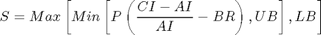
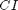
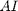
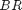
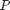
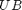
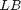

Equity Dampener
The class returns a symmetric adjustment parameter for the equity charge (currently, only applicable for the standard formula). The equity dampener is designed to prevent/reduce procyclical behaviour such that insurance companies are forced to sell their equities in a downturn leading to further market falls
Contents
%MATLAB CODE %%%%%%%%%%%%%%%%%%%%%%%%%%%%%%%%%%%%%%%%%%%%%%%%%%%%%%%%%%%%%%%%%%%%%%%%%%% classdef bootstrap_EqDamp < handle
%%%%%%%%%%%%%%%%%%%%%%%%%%%%%%%%%%%%%%%%%%%%%%%%%%%%%%%%%%%%%%%%%%%%%%%%%%%
How to use the class
There is one way to use this class:
- To produce a symmetric adjustment parameter used to prevent/reduce procyclical behaviour.
Properties
[EqLevel] : Equity level data series.
Data type : double array
[AvgPeriod] : The period (in years) for which the mean equity level is taken.
Data type : double
[Adj] : Base rate assumption.
Data type : double
[Proportion] : Proportionality constant.
Data type : double
[DayConvention] : The number of working days per calendar year, used to adjust for data only being available on week days.
Data type : double
[UpperBound] : The upper bound of acceptable values of the symmetric adjustment parameter.
Data type : double
[LowerBound] : The lower bound of acceptable values of the symmetric adjustment parameter.
Data type : double
%MATLAB CODE %%%%%%%%%%%%%%%%%%%%%%%%%%%%%%%%%%%%%%%%%%%%%%%%%%%%%%%%%%%%%%%%%%%%%%%%%%% properties % Data Series EqLevel = []; % Parameters AvgPeriod = []; Adj = []; Proportion = []; DayConvention = []; UpperBound = []; LowerBound = []; end %%%%%%%%%%%%%%%%%%%%%%%%%%%%%%%%%%%%%%%%%%%%%%%%%%%%%%%%%%%%%%%%%%%%%%%%%%%
List of Methods
The class introduces one new method:
1)[bootstrap_EqDamp()] - Function returns a symmetric adjustment parameter used to compensate for cyclical behaviour in the equity capital charge.
%MATLBAB CODE %%%%%%%%%%%%%%%%%%%%%%%%%%%%%%%%%%%%%%%%%%%%%%%%%%%%%%%%%%%%%%%%%%%%%%%%%%% methods
% Constructor function obj = bootstrap_EqDamp () end %%%%%%%%%%%%%%%%%%%%%%%%%%%%%%%%%%%%%%%%%%%%%%%%%%%%%%%%%%%%%%%%%%%%%%%%%%%
ans =
Bootstrap.bootstrap_EqDamp handle
Package: Bootstrap
Properties:
EqLevel: []
AvgPeriod: []
Adj: []
Proportion: []
DayConvention: []
UpperBound: []
LowerBound: []
Details of methods
1) [bootstrap_EqDamp()]
"""""""""""""""""""""""""""""""""""""""""""""""""""""""""""""""""""""""""
Description
Function returns a symmetric adjustment parameter used to compensate for cyclical behaviour in the equity capital charge.
Inputs
[EqLevel] : Equity level data series.
Data type : double array
[AvgPeriod] : The period (in years) for which the mean equity level is taken.
Data type : double
[Adj] : Base rate assumption.
Data type : double
[Proportion] : Proportionality constant.
Data type : double
[DayConvention] : The number of working days per calendar year, used to adjust for data only being available on week days.
Data type : double
[UpperBound] : The upper bound of acceptable values of the symmetric adjustment parameter.
Data type : double
[LowerBound] : The lower bound of acceptable values of the symmetric adjustment parameter.
Data type : double
Outputs
A symmetric adjustment parameter used to compensate for cyclical behaviour in the equity capital charge.
Calculations
The function calculates the symmetric adjustment parameter using the formula below:

with,
 : Latest equity level.
 : Mean equity level.
 : Base return assumption.
 : Proportionality constant.
 : Upper bound
 : Lower bound
If the symmetric adjustment parameter is outside the upper or lower bound imposed on it , the upper or lower bound value is returned instead.
%MATLAB CODE %%%%%%%%%%%%%%%%%%%%%%%%%%%%%%%%%%%%%%%%%%%%%%%%%%%%%%%%%%%%%%%%%%%%%%%%%%% % Find Symmetrical Adjustment (SA) Value function results = bs(obj, DataSeriesIn, ParametersIn) obj.EqLevel = DataSeriesIn; obj.AvgPeriod = ParametersIn{1}; obj.Adj = ParametersIn{2}; obj.Proportion = ParametersIn{3}; obj.DayConvention = ParametersIn{4}; obj.UpperBound = ParametersIn{5}; obj.LowerBound = ParametersIn{6}; results = obj.EqLevel; % set up results structure AvgDays = obj.AvgPeriod*obj.DayConvention; AI = mean(cat(1,obj.EqLevel.values{1:AvgDays})); CI = obj.EqLevel.values{1}; SA = min(max(obj.Proportion * ((CI - AI) / AI - obj.Adj),... obj.LowerBound), obj.UpperBound); results.values = num2cell(SA); results.dates = obj.EqLevel.dates(1); end
end
end